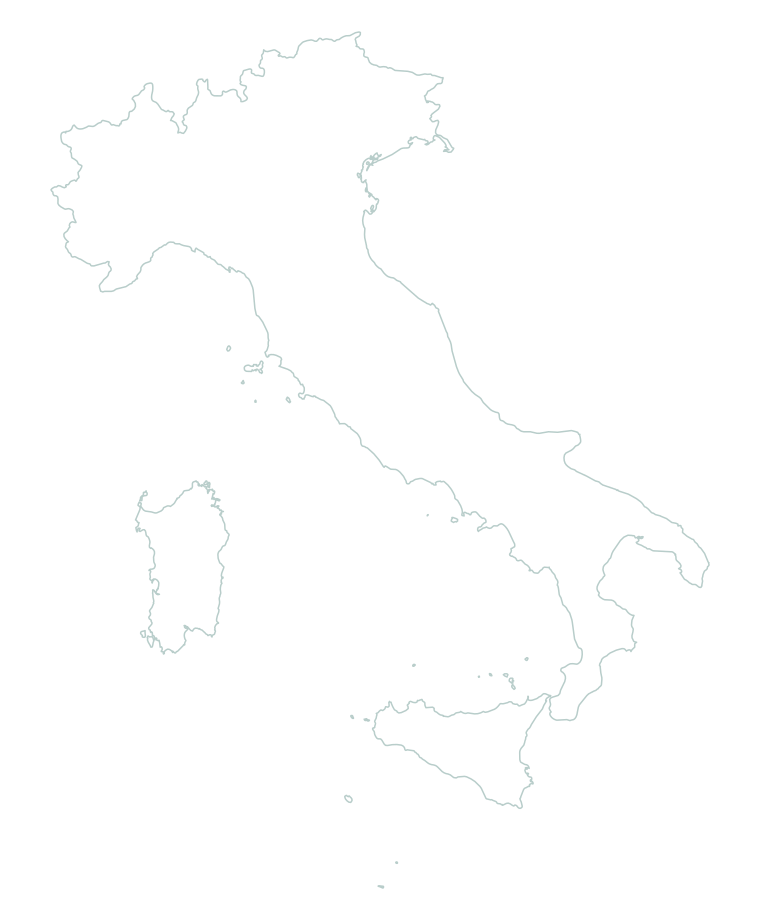

Vai alla mappa delle facilities
CNR
ISMAR
Facilities
Dati e servizi
›
SOM
›
Facilities
Piattaforme e reti di strumenti osservativi
Seleziona una facility sulla mappa per scoprirla.

AAOT
Piattaforma Acqua Alta
Paloma
Meda · Golfo di Trieste
S1GB
Meda · Delta del Po
E1
Boa · Costa riminese
AAOT · Piattaforma Acqua Alta
45.314247° N · 12.508248° E
Paloma · Meda
45.618283° N · 13.565217° E
S1GB · Meda
44.7384° N · 12.4526° E
E1 · Boa
44.14325° N · 12.5701° E